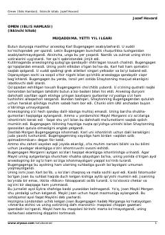

IHDahshatli sirlar va iblisga qarshi kurash haqidagi mistik asarning ikkinchi qismi.
Ushbu asarda qadimiy sirlar, arxeologik topilmalar va dahshatli voqealar markazida qolgan qahramonlarning kurashi hikoya qilinadi. Karl Bugengagen dunyoga xavf solayotgan yovuz kuch – iblisning sirini fosh etishga urinadi. Asar o'quvchini sirli va hayajonli voqealar girdobiga yetaklaydi.